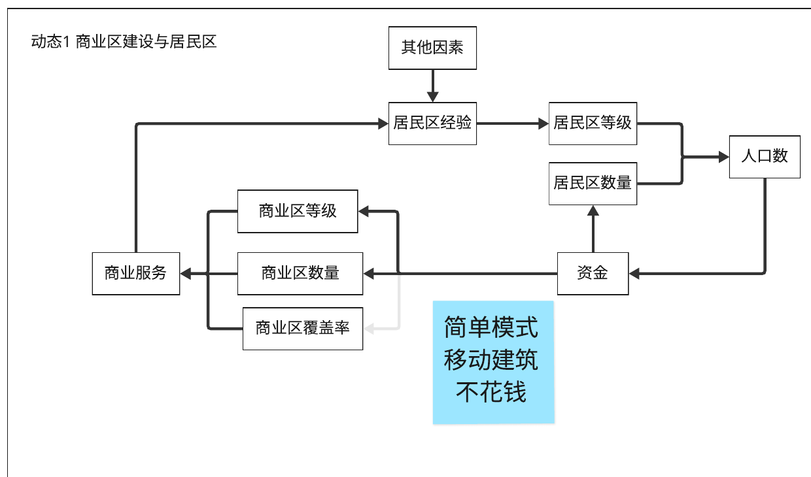
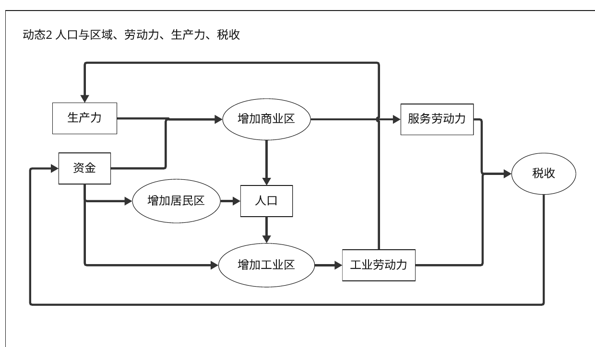
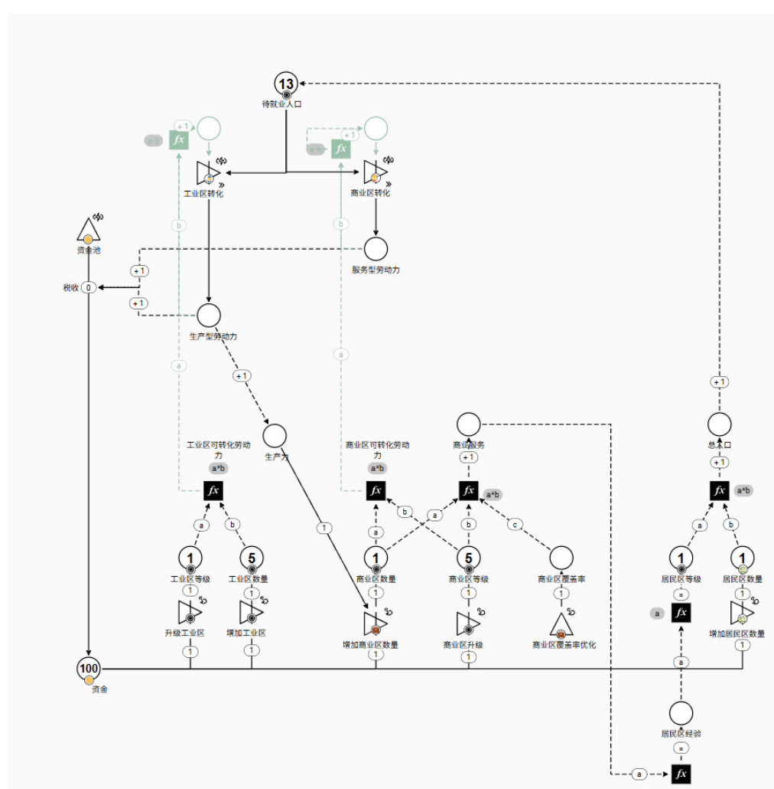
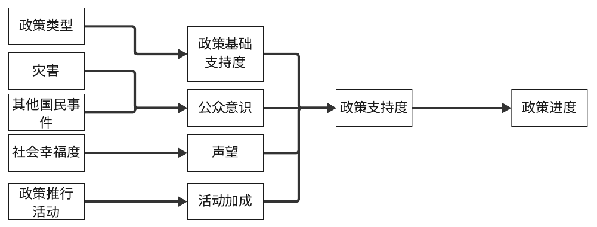
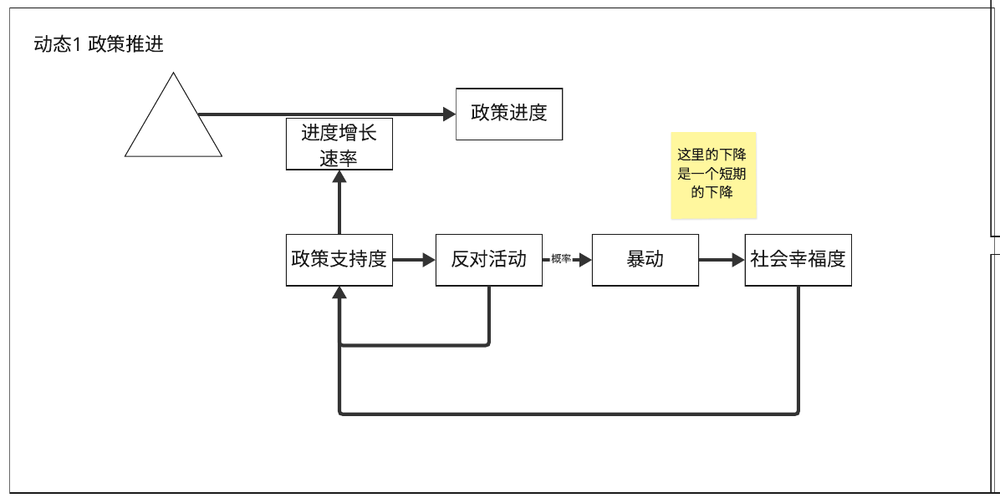
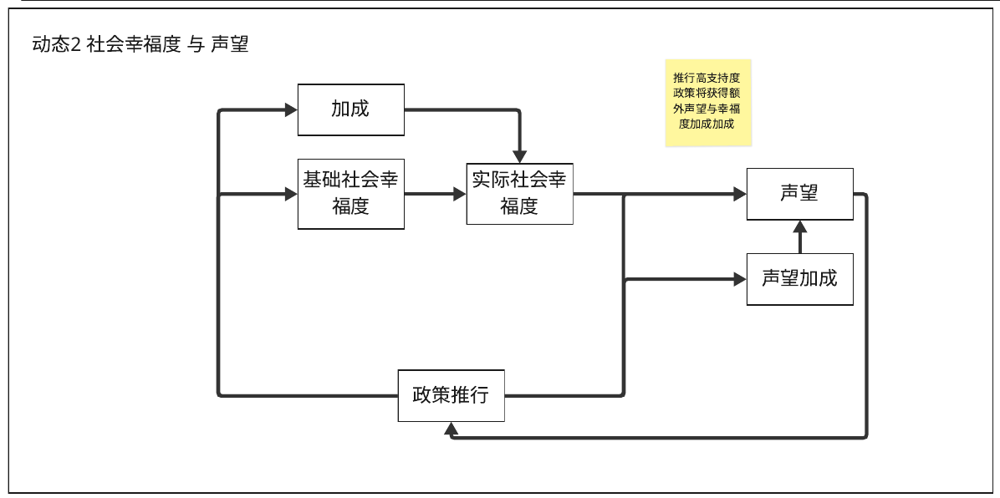
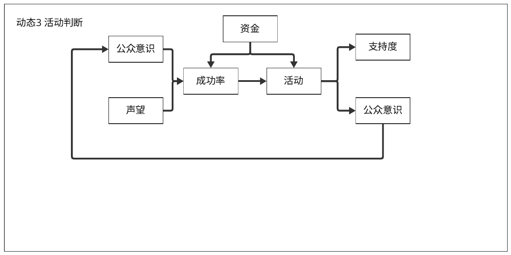
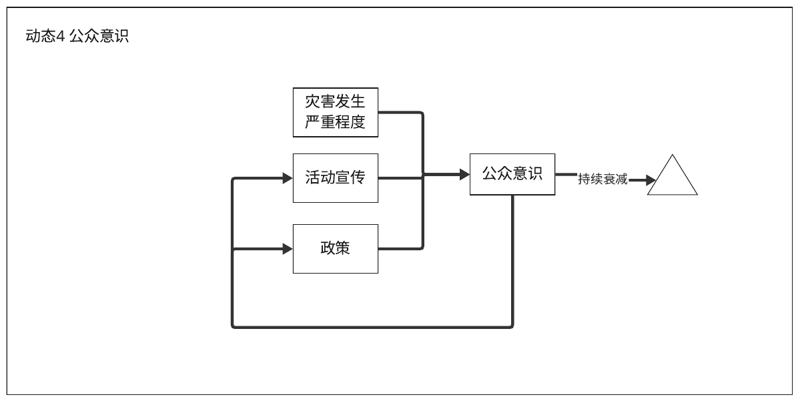

Sea U 最初是一款关于海平面上升的城市建造游戏。这一页整理了这个方案的系统设计：从设计目标和玩家的障碍出发，搭建经济和政治两套循环，并用 Machinations 建模。之后项目方向调整为水上出租车，原因见页面末尾。
设计目标
- 主题：气候变化 —— 海平面上升。
- High-Level Purpose：「Mobilize Urban Action on Rising Seas」—— 玩家能思考城市如何应对海平面上升，并关注与参与社会应对。
- 构思时的要素：资源管理、城市建设、人口、灾难、模拟。参考游戏：Spellcaster University、《冰汽时代》、《部落幸存者》、《纪元 1800》、《城市：天际线》。
希望玩家发生的转变：
- 相信气候变化对城市是现实且紧迫的威胁。
- 知道不同城市采取的防洪和适应措施（如海堤、浮动社区），能辨认哪些城市与群体最脆弱，理解风险差异。
- 学会基础的城市规划方法，例如如何分配防洪设施、迁移人口或设计浮动建筑。
- 对受灾市民产生共情。
- 开始把自己看作「环境问题的关注者」和「能提出解决方案的人」，而非旁观者。
- 愿意在现实生活中参加环保或城市治理相关的活动。
障碍与设计对策
按转变框架，先列出玩家「为什么还没有转变」，再为每个障碍选择策略：消除（Eliminate）、限制（Constrain）、绕开（Scaffold Around）或搁置（Set Aside）。
| 障碍 | 策略 | 想法 |
|---|---|---|
| 认为海平面上升是一件遥远的事情 | 消除 | 没想好怎么解决，但应该是可以解决的 |
| 认为这是专家的事情 | 消除 | |
| 不是沿海地区的居民，认为海平面上升与自己无关 | 限制 | 我们计划不主要面向这类群体 |
| 认为谈论环保是无趣的、「政治正确的」、不酷的；更看重短期的经济发展，不在乎长远规划 | 绕开 | 避免直接提到环保：这是一个很酷的、灾难背景的建设游戏 |
| 没有机会接触真正的社区行动和环保项目；某些国家不会清晰地公开政策，接触相关政策很复杂 | （未定） | |
| 某些玩家可能缺乏系统性思考的能力 | 搁置 | 尝试给这类玩家其他有趣的事情做？ |
| 海平面上升的影响牵涉社会的很多方面，时间上的影响也非常漫长 | 消除 | |
| 不了解城市设施与政策是如何运作的 | 消除 | |
| 认为更高的海堤就能解决问题；认为这是一件无需担忧或无可挽回的事 | 消除 | |
| 主题太沉重，情绪上不愿意面对 | 绕开 | 增添一些愉快的内容，不要像《冰汽时代》那样阴沉 |
系统结构
按 MDA 框架，先列出机制层面的系统，再考虑它们会产生的动态：
| 层面 | 内容 |
|---|---|
| 系统 | 城市建设系统、迁移系统、经济系统、灾害系统、民意系统、修复系统、政策系统 |
| 城市模块 | 居住模块、生产模块、生态模块、能源模块、基础设施 |
| 政策影响的维度 | 经济、环境、社会、居民意识；分为短期效果和长期效果 |
| 核心动态 | 灾害与恢复（不确定的海平面上升、次生灾难）；资源与经济平衡；政策执行与反馈 |
资源分为金钱、总人口、服务型人口、生产型人口、商业区覆盖率、商业区、居民区、工业区，以及影响力（居民区经验）。
经济：人口、区域与税收
动态 1：商业区建设与居民区


- 资金用于建设居民区和商业区。居民区的等级和数量决定人口数，人口再带来资金。
- 商业区的等级、数量和覆盖率决定商业服务；商业服务和其他因素一起积累居民区经验，经验提升居民区等级。
- 简单模式下移动建筑不花钱。
动态 2：人口与区域、劳动力、生产力、税收


- 把劳动人口分为生产人口（工业区，第一、第二产业）和服务人口（第三产业）。商业区需要一定的人口成为服务人口，并且要消耗生产人口提供的生产力；工业区的作用是把人口转化为生产人口，从而提供生产力。
- 税收由服务人口税收和生产人口税收构成，税收再变成资金，用于增加居民区、商业区和工业区。
- 商业区主动转化人口：当人口不足以转化为商业区人口时，会转化所有剩余人口并显示短缺。转化优先流向工业区。
动态 3：新区建设
生产力和资金共同用于新区建设（当时标注为「之后再说」）。
Machinations 模型
我把动态 2 搭成了 Machinations 模型，包含工业区和商业区的转化、劳动力、生产力、税收和资金。


当时列出的待设计内容（需要做一张数据配置表）：
- 工业区和商业区转化劳动力的公式（变量：区域等级、区域数量）
- 商业服务的计算方法
- 居民区人口 = f（居民区等级）
- 税收 = f（服务人口，生产人口，税率）
- 居民区经验公式（还欠缺变量）
为了简洁，暂时省略的机制：人口按一定速度增长（目前是等级到了就瞬间变化）。另一个想法是加一项「待就业人口补助金」政策，用来提升幸福度和声望。
政治：政策与民意
政策支持度的构成


政策类型决定政策的基础支持度；灾害和其他国民事件影响公众意识；社会幸福度影响声望；政策推行活动带来活动加成。这几项共同决定政策支持度，支持度再推动政策进度。
动态 1：政策推进


政策支持度决定进度的增长速率。政策每个单位时间（每日或每小时）结算一次增长：
政策增长 = 基准时间单位增长 × 增长速率加成
基准时间单位增长 = 100% ÷ 基准时间（以单位时间计）- 政策支持度低于 50% 时，会按概率产生政策反对活动。
- 反对活动每个单位时间消耗 1 点支持度。
- 反对活动有固定概率引发暴动，降低一定的社会幸福度（这是一个短期的下降）。
- 反对活动持续一定时长，每个城市最多同时存在一个。之后可以考虑给反对活动加上「烈度」属性。
动态 2：社会幸福度与声望


- 基础社会幸福度加上加成，得到实际社会幸福度；实际社会幸福度影响声望和声望加成，声望又影响政策推行。
- 推行高支持度的政策，会获得额外的声望和幸福度加成。
| 声望 | 等级 |
|---|---|
| 0–20 | Unknown（无名） |
| 21–40 | Noticed（受关注） |
| 41–60 | Respected（受尊敬） |
| 61–80 | Renowned（有名望） |
| 80–100 | Legend（传奇） |
动态 3：活动判断


公众意识和声望决定活动的成功率，资金同时作用于成功率和活动本身。活动会提升支持度和公众意识，公众意识再影响下一次活动的成功率。
动态 4：公众意识


公众意识由灾害发生的严重程度、活动宣传和政策共同影响，并且会持续衰减；公众意识又反过来作用于活动宣传和政策。提升公众意识的活动包括演讲和防洪演习。
灾害、事件与结局
- 灾害：海平面上升、海啸、海水入侵、潮流。每种灾害分「即将发生」和「正在发生」两个状态，给玩家留出反应时间；被淹的地块不能再建造。
- 修复：受灾的设施进入「需要修复 → 修复中 → 修复完成」的状态。
- 政策事件：政策推行中、停止推行、推行成功或失败（附失败原因和代价）。
- 招标：玩家可以发起招标，选择项目和成本。
| 坏结局 | 触发条件 |
|---|---|
| 破产 | 资金归零 |
| 叛乱 | 声望（或社会幸福度等）过低 |
| 淹没 | 灾害使所有土地被淹 |
| 疾病 | 生态 / 卫生过低 |
界面草图
- 主界面：日期、海平面高度、人口、生产力、时间控制（暂停 / 播放 / 快进），以及通知、事件、科技树、百科入口。
- 其他界面：开始界面、存档（3 个存档位）、难度选择（简单 / 普通 / 困难）、声望、新闻、百科目录（游戏目标、建造、政策、经济、人口与劳动力、城区、游戏背景）。
项目拆解
为了推进开发，我们把整个方案拆成按职能划分的任务树：2D 美术、UI、数据与系统、程序、音效、制作、叙事。数据与系统部分列出了每个需要定数值的问题，例如「每座房子的合适人口」「游戏时间与现实时间的比例」「各种方式对声望的增减速度」「触发破产结局的最低资金」；程序部分则为每项功能写了验收标准，例如「人口按数据增长」「支持度与政策推进匹配」「资金低于阈值时能触发结局」。
为什么被砍掉
这套方案系统很多、内容很重，而「转变」理论只停留在表面，没有成为串起一切的核心结构。学期初的复盘之后，我们保留了「海上城市」的灵感，把范围缩小到工作和交通，改成了水上出租车司机（见从城市建造到出租车）。
内容整理自团队的 Miro 设计板。